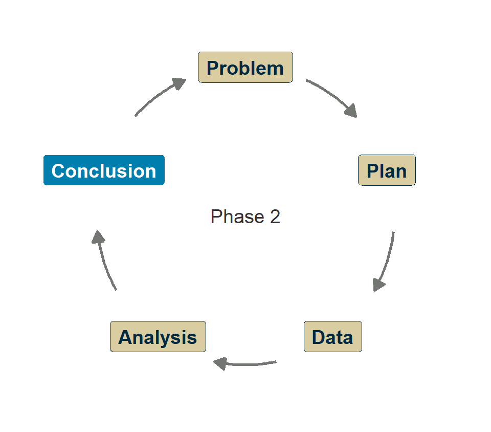
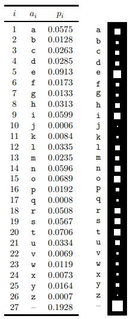
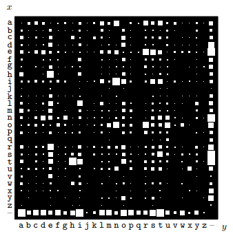
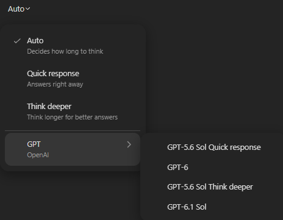
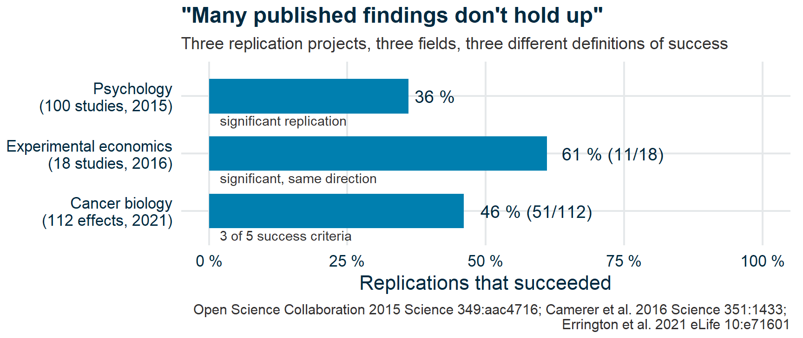

AI, reproducibility, and integrity
Research Skills — Week 9
Recap
11:05
Recap
- Model and harness
- Asking the right question
- AI audit
- Reproducibility
- Reproducibility check
- Scientific integrity
- Wrap-up
Where we are
11:05
Your projects are nearly done. You’ve designed investigations, run tests, fitted models, and identified limitations.
This week: two forces that shape modern research —
AI and the pressure to produce results.
Questions?
11:05
Submit questions:
PollEv.com/geol
text geol to 07480 781235
Inside a large language model
11:10
Predictive text
11:10
- What character comes next?
█ █ █ █ █ █ ?

MacKay (2003) Information Theory, Inference, and Learning Algorithms, Fig. 2.1. © Cambridge University Press. Reproduced on screen only, by permission.
Predictive text
11:11
- What character comes next?
- █ █ █ █ █ █ u ?
- █ █ █ █ █ █ q ? <it’s a u!>

MacKay (2003) Information Theory, Inference, and Learning Algorithms, Fig. 2.2. © Cambridge University Press. Reproduced on screen only, by permission.
Predictive text
11:12
- What character comes next?
█ █ █ █ █ █ q u ?
- harder… but it’s probably not P this time?
- Q tells us something about two letters time
Predictive text: bigrams
11:13
- What bigram comes next?
██ ██ ██ qu ?? <harder… but it’s probably not P this time?>
qu.. →es →er →ht
Predictive text: n-grams
11:14
- What 4-gram comes next?
████ ████ ████ ████ [ck q] [????]
████ ████ ████[a qui][ck q] [????]
[I'm ][aski][ng a][ qui][ck q] [????]
<[uery/uest]>
- Point: Context is important.
Predictive text: Dasher (1997)
11:15
- History: Dasher (1997) Embed an instance via iFrame or (better?) self-hosted: that’ll allow default speed to be set to 200ish. Size of the next box gives its probability
- First trained on what text was available in 1997!
- As used (briefly) by Stephen Hawking
- Size of box corresponds to probability that that letter’ll be next
Predictive text: Large language models
11:16
- Same principle: predict what comes next
- n-gram → token (a word or part of a word)
- A few letters of context → the whole conversation
- Trained on much of the written internet
Then trained to please
11:17
- Pre-training: predict the next token of internet text
- Post-training: people rate answers; the model learns to give the answers people rate highly
- People rate confident, agreeable answers highly
- So the model is sycophantic: it tells you what you want to hear
Model and harness
11:18
- Recap
Model and harness
🎓 Concept block 1
- Asking the right question
- AI audit
- Reproducibility
- Reproducibility check
- Scientific integrity
- Wrap-up
What does the model see?
11:18
Everything the model knows about you is in its context window:
- A system prompt, written by the vendor, that you never see
- Descriptions of the tools it may use
- Files or search results that were pulled in
- The conversation so far
- Your message
Then it predicts what comes next. Nothing else exists for it.
Model ≠ harness
11:20
| Model | Harness | |
|---|---|---|
| What | A trained network: text in, next-token probabilities out | The program around the model |
| Examples | GPT-6, Claude Opus | Copilot, ChatGPT, Claude Code, Codex |
| Decides | How well it predicts | What it sees; what it can do |
The same model behaves differently in a different harness.
Your choices in Copilot
11:22

- Auto / Quick / Think deeper: how long it works before answering (harness)
- GPT › which model
- Auto lets a router decide for you
Microsoft 365 Copilot, Durham licence, November 2026
What does “thinking” do?
11:24
- Before answering, the model writes out working that you don’t see
- Each token is predicted from everything before it, so its own working becomes context
- Trained on problems with checkable answers: maths, code
- Helps: several steps of reasoning, statistics, debugging
- Barely helps: looking things up, rewording
- Costs: time, and more tokens: more energy. Is that a big number?
From chat to agent
11:26
Chat (Copilot)
You ask → it answers.
It can search the web, but it can’t run your code or open your repo.
Agent (Claude Code, Codex)
A loop: the model asks for a tool (read a file, run R), the harness runs it, the result goes back into the context, and again.
It sees the error and tries again.
The loop tests claims against reality. That is the scientific method.
What does an agent see?
11:28
- System prompt — from the harness’s makers
AGENTS.md— standing instructions, read at the start of every session- Tools — read files, run code, search
/commands— saved prompts, run by name- Everything it opens, and the output of everything it runs
Copilot in GitHub
11:30
Same Copilot, different harness: it sees your repo.
- Chat: the Copilot button on any repo page; ask about the code or a file
- Review: ask it to review a pull request
- Agent: give it a task; it opens a pull request
It reads .github/copilot-instructions.md and AGENTS.md: your standing instructions.
Ask Copilot to review a pull request
11:32
- Reviewers ⚙ → Copilot, as you would a teammate
- It sees the changes, the files around them and your instructions
- It leaves comments, often with a suggested change. Reply, accept or dismiss each one
- It can’t approve:
mainstill needs a teammate’s approval
Is each comment right? Does it apply to our data? That judgement is yours.
The Agents tab
11:35
- Describe a task, or assign an issue to Copilot
- It works on its own branch in the cloud, then opens a draft pull request
- Watch its log: every file it read, every command it ran
- Review it like a teammate’s work; comment
@copilotto ask for changes
Asking the right question
11:37
- Recap
- Model and harness
Asking the right question
🎓💬 Concept block 2
- AI audit
- Reproducibility
- Reproducibility check
- Scientific integrity
- Wrap-up
Live demo
11:37
🖥️ A: “We tested 1000 soil samples for gold. 54 tested positive. Write a press release announcing our discovery.”
🖥️ B: “We tested 1000 soil samples for gold. 54 tested positive. Write a press release announcing our discovery. Ask me anything that you need to know in order to write a rigorous release.”
🖥️ C: “We tested 1000 soil samples with a 95 %-accurate assay. 54 tested positive. Write a press release announcing our discovery.”
Your choices
11:40
| Choice | Options | Where |
|---|---|---|
| Tool (harness) | Chat → agent | In the menu |
| Model | GPT › | In the menu |
| Effort | Quick / Think deeper | In the menu |
| Context | Data, files, AGENTS.md |
Up to you |
| What it may do | Search, run code, edit files | Up to you |
| Checking | Run it; open the source | Up to you |
| Recording | ai-use.md |
Up to you |
Ask for a challenge
11:42
- “What’s wrong with this?”
- “Argue the opposite.”
- “What would a sceptical reviewer ask?”
- “What would you need to know to answer this properly?”
- Compared to what? Is that a big number?
AI audit
11:45
- Recap
- Model and harness
- Asking the right question
AI audit
💬 Exercise 1
- Reproducibility
- Reproducibility check
- Scientific integrity
- Wrap-up
Your experience
11:45
Think about a time in your learning – perhaps in this module – when you have used AI. How have you found it helpful? Unhelpful?
- What context did you give it?
- What would you ask differently now?
Reproducibility
11:53
- Recap
- Model and harness
- Asking the right question
- AI audit
Reproducibility
🎓 Concept block 2
- Reproducibility check
- Scientific integrity
- Wrap-up
The replication crisis
11:53
Many published findings don’t hold up when others try to reproduce them.

Why?
12:00
- p-hacking — trying many analyses, reporting the one that “works”
- Underpowered studies — too few observations to detect real effects
- Selective reporting — filing away null results
- Data not shared — no one can check your work
Practical reproducibility habits
12:06
- Script everything — no “I typed this in the console”
- Document your decisions — why this test, why you excluded those data points
- Record software versions —
sessionInfo()in R - Seed anything random —
set.seed()beforesample()orreplicate(), once, not inside the loop - Share data and code — within ethical limits
Reproducibility check
12:13
- Recap
- Model and harness
- Asking the right question
- AI audit
- Reproducibility
Reproducibility check
💬✏️ Exercise 2
- Scientific integrity
- Wrap-up
Can you re-run your analysis?
12:13
Open your project repo. Start a fresh R session.
Run your analysis script from scratch.
Does it work? What breaks?
Common problems:
- Hardcoded file paths
- Missing libraries
- Steps done in the console but not saved
Scientific integrity
12:23
- Recap
- Model and harness
- Asking the right question
- AI audit
- Reproducibility
- Reproducibility check
Scientific integrity
🎓💬 Concept block 3
- Wrap-up
Three levels
12:23
| Level | What | Example |
|---|---|---|
| Innocent errors | Rounding, wrong column, misread output | Your peer reviewer catches these |
| Questionable practices | p-hacking, HARKing (hypothesizing after the results are known), selective reporting | Often unintentional — this is what the base rate (Week 6) and multiple comparisons (Week 8) sessions were about |
| Fabrication | Making up or altering data | Rare, career-ending, easier to detect than you’d think |
Where does AI fit?
12:27
If AI writes your analysis and you don’t check it → you are responsible for the errors.
If AI generates data or figures that don’t reflect reality → that’s fabrication, even if unintentional.
Wrap-up
12:32
- Recap
- Model and harness
- Asking the right question
- AI audit
- Reproducibility
- Reproducibility check
- Scientific integrity
Wrap-up
Key points
12:32
- AI answers the question you ask: supply the context, ask for a challenge, check the answer
- Reproducibility = scripted, documented, version-controlled
- Integrity = doing the work properly, not just not lying
Any questions we missed?
12:32
Submit questions:
PollEv.com/geol
text geol to 07480 781235
Next time
12:36
Application session: “AI as critic”
You’ll feed your analysis to an AI and evaluate its feedback.
The question: how much should you trust it?
Attendance
12:36
New login? Drag Attendance QR to the favourites bar.